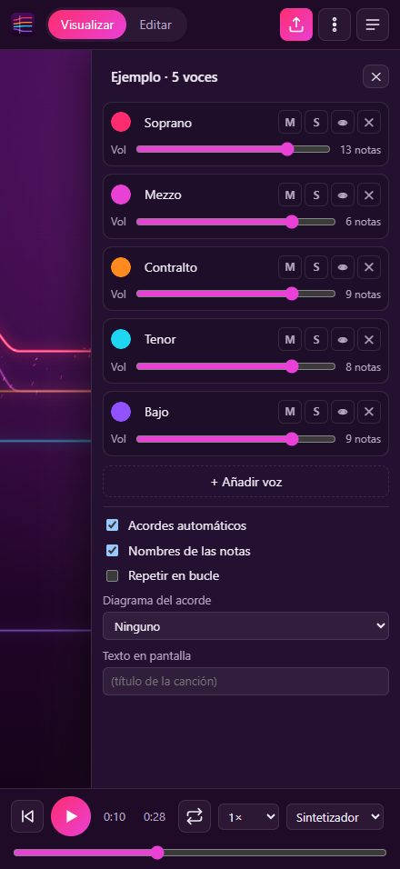
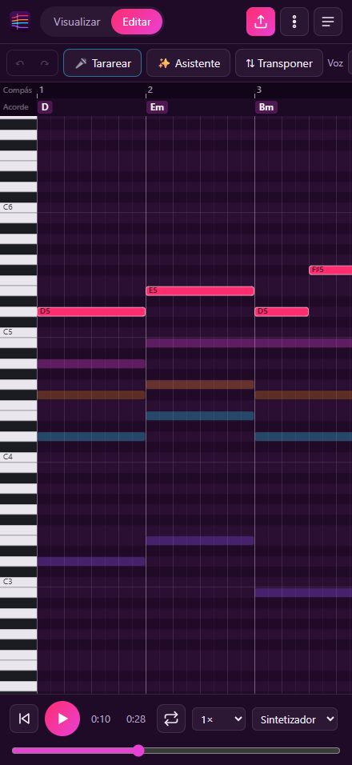
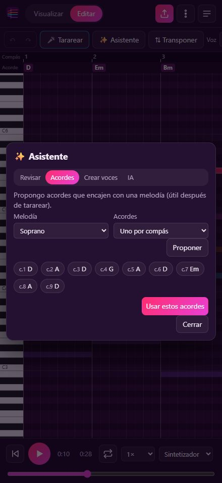

Sube la partitura o una grabación y Vocify dibuja cada voz como una línea de neón que sube y baja con la melodía. Escucha la tuya, silencia las demás y ensaya hasta que salga.
Gratis. Funciona sin cuenta. App para iPhone en camino.

MusicXML (MuseScore, Finale, Sibelius, Flat…) o MIDI. Con repeticiones, ligaduras y acordes.
WAV, MP3, M4A, OGG, FLAC… Vocify escucha el audio en tu dispositivo y lo convierte en voces que luego puedes corregir.
Cada voz es una línea de color con su nombre. Ves de un vistazo quién sube, quién baja y dónde os cruzáis.
Solo o silencio por voz, velocidad lenta, metrónomo, cuenta atrás y bucle de los compases difíciles.
Pon, mueve y alarga notas con el dedo; cambia acordes, transporta y deshaz. O tararea una melodía y se convierte en notas.
Crea el grupo, invita con un código y las canciones se sincronizan solas para todos.
Revisa cruces y saltos, propone acordes y crea voces nuevas. Con IA (Claude) para ideas más elaboradas.
Si quieres, debajo aparece cómo tocar cada acorde en guitarra, ukelele o piano.
Graba un vídeo vertical con las líneas y el sonido, listo para compartir.



Sin publicidad y sin rastreo. Sin cuenta, todo se queda en tu dispositivo; el audio del micrófono y las grabaciones se analizan ahí mismo y no se envían a ningún sitio. Política de privacidad.